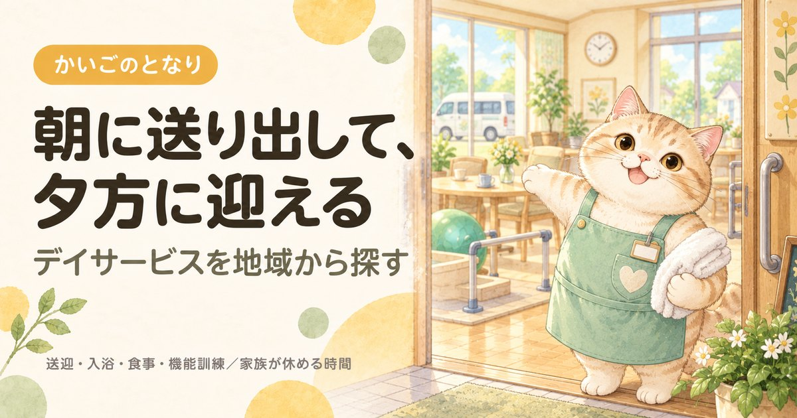

足立区のデイサービス一覧｜送迎範囲と費用の見方
事業所一覧へ（107件）
東京都足立区で通所介護（デイサービス）を探している方へ。東京都の指定を受けた107件すべてを電話番号・地図つきで掲載し、所在町域・運営法人・開設からの年数の内訳と、1級地での自己負担をまとめました。デイサービスでいちばん多い壁は本人が行きたがらないことです。選ぶ順番は近い順ではなく、通い続けられる条件の順になります。
目次
数字で見る足立区のデイサービス
- 区内の事業所
- 107件23区中1位（多い順）
- 65歳以上1万人あたり
- 6.4件23区中2位（多い順）
- 高齢化率
- 23.9%23区中2位（高い順）
- 要介護・要支援の認定
- 40,044人65歳以上の23.9%
事業所数は東京都福祉局の指定事業所一覧（2026年9月1日時点）、人口は住民基本台帳（2026年1月1日時点）から計算。区の統計をくわしく見る
足立区でデイサービスを探すとき、最初に押さえること
足立区には東京都の指定を受けた通所介護事業所が107件あります。区内の数が多いぶん、送迎範囲と規模で絞れます。デイサービスで実際にいちばん多い壁は、費用でも空きでもなく本人が行きたがらないことです。だからこそ、選ぶ順番は「近い順」ではなく通い続けられる条件の順になります。
①地域包括支援センター（ホウカツ）かケアマネジャーに相談してケアプランに位置づける → ②送迎範囲に自宅が入る事業所を絞る → ③見学と体験利用をする → ④週1回から始める。
最初から週3回で組むと、合わなかったときの反発が大きくなります。慣れてから増やすほうが長く続きます。
デイケアとの違い、地域密着型・認知症対応型などの種類、保険内と保険外を分けた費用の見方、本人が嫌がるときの対処はデイサービスを地域から探すにまとめています。足立区に限らず共通の内容です。
足立区のデイサービス一覧
足立区内で指定を受けている通所介護事業所107件をすべて掲載しています（東京都公表・2026年9月1日時点）。区内には107件が指定を受けており、そのすべてを掲載しています。定員18人以下の地域密着型通所介護は区が指定するため、この一覧には含まれていません。掲載順は事業所の優劣を示すものではありません。
107 / 107件を表示
提供曜日の記載がない6件は、曜日で絞ると表示されません。
地図：国土地理院（地理院タイル）を加工して作成。位置は厚生労働省の公表データの座標で、建物の入口とずれることがあります。
2高齢者在宅サービスセンター 西新井本町友興の園
西新井本町四丁目13番16号社会福祉法人友興会
事業所番号 1372101459
3足立区さのデイ・サービスセンター
佐野2-30-12社会福祉法人東京蒼生会
事業所番号 1372101475
4足立区日の出デイ・サービスセンター
日ノ出町27-3-101社会福祉法人東京蒼生会
事業所番号 1372101491
5デイサービスセンター扇
扇一丁目52番23号社会福祉法人聖風会
事業所番号 1372101517
6社会福祉法人 愛寿会 西綾瀬在宅サービスセンター
西綾瀬3-2-1社会福祉法人愛寿会
事業所番号 1372101525
7社会福祉法人 愛寿会 紫磨園在宅サービスセンター
入谷3-3-6社会福祉法人愛寿会
事業所番号 1372101533
8デイサービスセンターはなはた
花畑四丁目39番10号社会福祉法人聖風会
事業所番号 1372101574
9足立ケアコミュニティ そよ風
梅島2-31-14株式会社ＳＯＹＯＫＡＺＥ
事業所番号 1372101582
11デイサービスセンターさくら
皿沼二丁目8番8号社会福祉法人足立邦栄会
事業所番号 1372101889
13高齢者在宅サービスセンター中央本町
中央本町4-14-20社会福祉法人杉の子
事業所番号 1372102309
14高齢者在宅サービスセンターはごろも
西新井5-34-1社会福祉法人互恵会
事業所番号 1372102341
15ウエルガーデン 伊興園
伊興3-7-4社会福祉法人ウエルガーデン
事業所番号 1372102366
17デイサービスゆいまーる
千住仲町16-4ゆいまーるビル株式会社トータルケアサービス加島
事業所番号 1372102689
18医療法人社団 容生会 デイサービス ゆとり
保塚町15-19ようせいメディカルコート1F医療法人社団容生会
事業所番号 1372102945
19高齢者在宅サービスセンター 西新井
西新井2-5-5社会福祉法人西新井だいわ会
事業所番号 1372103414
22ケアセンターつどい 谷中
谷中3-8-19メディカル・ケア・プランニング株式会社
事業所番号 1372104040
26老人デイサービスセンタープレミア扇
扇一丁目3番5号社会福祉法人白寿会
事業所番号 1372105344
27デイサービスセンターハピネスあだち
江北3-14-1社会福祉法人ファミリー
事業所番号 1372105443
28デイサービスわかば平野
平野2-8-2株式会社わかばケアセンター
事業所番号 1372105500
29デイサービスあおば 蜜柑の家
辰沼2-4-17有限会社あおば
事業所番号 1372105773
30日介ケアセンター本木
本木1-20-5株式会社日本介護センター
事業所番号 1372106052
32デイサービスセンター朝日
興野1-18-12有限会社足立同胞サービス
事業所番号 1372106334
33おしどりデイサービスセンター
鹿浜7-25-15シャトーセブン鹿浜1階医療法人社団福寿会
事業所番号 1372106391
35ケアセンターつどい足立入谷
入谷1-27-18メディカル・ケア・プランニング株式会社
事業所番号 1372106441
36株式会社ケアサービス デイサービスセンターたくみ
南花畑2-6-8株式会社ケアサービス
事業所番号 1372106466
37ケアパートナー花畑
南花畑1-13-20ケアパートナー株式会社
事業所番号 1372106474
39ジョイリハＳＰＡ北綾瀬
谷中2-10-17 アイリスセゾン1階株式会社ヤマウチ
事業所番号 1372106714
40株式会社ケアサービス デイサービスセンター江北
江北3-38-23株式会社ケアサービス
事業所番号 1372106987
41株式会社ケアサービス デイサービスセンター西保木間
西保木間1-23-4株式会社ケアサービス
事業所番号 1372107118
43フィットネス デイ ハンド・イン・ハンド
西新井5-13-8株式会社ハンド・イン・ハンド
事業所番号 1372107316
45ニチイケアセンター中川
中川1-3-10株式会社ニチイ学館
事業所番号 1372107373
49ハートデイサービスセンター
大谷田5-28-15株式会社エイ・ブレイン
事業所番号 1372107936
50デイサービスセンター谷中翔裕園
谷中1-17-7社会福祉法人長寿村
事業所番号 1372107951
52ベストリハ五反野
足立3-7-16グリーンパーク第5五反野1階ベストリハ株式会社
事業所番号 1372108272
54ベストリハ西新井
西新井栄町1-17-20レコシティ・プライム1階ベストリハ株式会社
事業所番号 1372108769
55デイサービスセンター ケアサポートあだち
千住河原町22-3ケアサポート株式会社
事業所番号 1372108827
56デイサービスきたえるーむ竹ノ塚
六月2-1-1株式会社ヤマチコーポレーション
事業所番号 1372109098
58ベストリハ北千住
千住旭町9-13宝マンション1階ベストリハ株式会社
事業所番号 1372109221
59ベストケア・デイサービスセンター足立六町
一ツ家3-17-5プレミールタニノ1階ベストケア株式会社
事業所番号 1372109395
60きららデイサービス花畑
南花畑4-18-7株式会社グッドスタッフ
事業所番号 1372109429
61癒しのデイサービス足立
青井5-11-27綾瀬グランドハイツ1階株式会社リエイケア
事業所番号 1372109684
62デイサービスセンター ピオーネ西新井
西新井1-33-15社会福祉法人桃山福祉会
事業所番号 1372110005
63平成デイサービスセンター足立
入谷1-8-15社会福祉法人道心会
事業所番号 1372110120
64ドーミーＣａｒｅ Ｌｅｖｉ亀有
東和1-17-26株式会社共立メンテナンス
事業所番号 1372110641
65デイサービスセンター ル・ソラリオン綾瀬
東綾瀬3-9-1社会福祉法人敬仁会
事業所番号 1372110716
66デイサービス絆の家
佐野2-32-14-102号合同会社愛心倶楽部
事業所番号 1372110948
67ケアパートナー西新井
西新井4-26-21ケアパートナー株式会社
事業所番号 1372111094
68セカンドジムプラス 西新井
西新井4-31-14株式会社プレジデントガーデン
事業所番号 1372111243
69フィットネスデイ フェニックス梅島
梅田7-19-9医療法人社団福寿会
事業所番号 1372111896
71ベストリハ竹ノ塚
竹の塚2-9-1トータス竹の塚1階ベストリハ株式会社
事業所番号 1372112357
72サンライズのデイサービス陽光
西綾瀬2-7-6レミカーサ1階サンライズ・メイト・バート株式会社
事業所番号 1372112514
73デイサービス桜花乃郷 足立江北
江北4-5-4シャトー江北1階株式会社おうかのさと
事業所番号 1372112548
75ａｋａｒｉ舎人
舎人5-2-21株式会社ヒューマンサポート
事業所番号 1372112670
76デイサービス ラスベガス足立
島根1-1-8日本シニアライフ株式会社
事業所番号 1372112712
77デイホームゆりの木竹ノ塚
竹の塚2-23-5ヴィルヌーブ1階株式会社日本エルダリーケアサービス
事業所番号 1372112886
79ルネサンス 元氣ジム綾瀬
綾瀬6-5-12アドラブール綾瀬1階株式会社ルネサンス
事業所番号 1372113074
80デイサービスわかば佐野
佐野2-43-8株式会社わかばケアセンター
事業所番号 1372113132
81コンパスウォーク保木間
保木間1-19-2株式会社フォー・ツリーズ
事業所番号 1372113157
84コンパスウォーク北綾瀬
神明南2-12-13株式会社フォー・ツリーズ
事業所番号 1372113355
86ジョイリハプラス大師前
栗原3-10-19-109株式会社ヤマウチ
事業所番号 1372113504
87デイサービスまゆら本店
西竹の塚2-12-16グランドソレイユ1階ＡＬ１株式会社
事業所番号 1372113520
89コンパスウォーク東和
東和3-18-2株式会社フォー・ツリーズ
事業所番号 1372113660
90デイサービス さぽると
栗原1-14-19宮内サンハイツA棟1階株式会社ＡＣＱＵＡ＆ＳＵＰＰＯＲＴＯ
事業所番号 1372113785
91リハプライド 足立区入谷
入谷2-19-14ホワイトハイツ市川 1F店舗（101号室）株式会社ＨＡＲＵ
事業所番号 1372114007
93ヒューマンライフケア西新井
栗原1-25-8ジュナラル1階ヒューマンライフケア株式会社
事業所番号 1372114213
94わくわく倶楽部等潤
一ツ家4-2-11社会医療法人社団慈生会
事業所番号 1372114221
95こまどりデイサービスセンター関原
関原3-1-11-3階医療法人社団福寿会
事業所番号 1372114387
97デイサービスセンター ｏｎｅＨｅａｒｔ
花畑3-12-4メゾンクレール1F株式会社ＮＥＸＴＯｎｅ
事業所番号 1372114775
98デイサービスわかば西新井
西新井4-20-1株式会社わかばケアセンター
事業所番号 1372114890
100まゆら北綾瀬店
北加平町9-25ユヌ・リュミエール1階ＡＬ１株式会社
事業所番号 1372115079
101こまどり・フェニックスデイサービスセンター南花畑
南花畑3-35-10-1階医療法人社団福寿会
事業所番号 1372115087
106デイサービスセンター バンビ 足立店
神明南1-3-15株式会社ワールドケアサービス
事業所番号 1372205276
107デイサービスセンター バンビ 加平店
西加平2-4-21株式会社ワールドケアサービス
事業所番号 1372206167
条件に合う事業所はありません。条件を1つ外してみてください。
上記107件は、2026-09-22に足立区および各事業者の公表情報で確認した内容です。営業時間・対応エリア・空き状況は変動しますので、連絡の前に必ず公式情報をご確認ください。掲載内容の訂正・削除は、お問い合わせからご依頼いただければ理由の説明なしで削除します。
掲載107事業所の内訳
掲載している107件を町域別に見ると、多いのは西新井（8件）、入谷（6件）、江北（6件）です。運営法人は営利法人が77件で最も多くなっています。日曜日もサービスを提供しているのは、曜日が分かる101件のうち13件（13％）で、23区のなかでは8番目の割合になります。
所在町域
デイサービスは送迎があるため、事業所の所在地がそのまま通える範囲ではありません。ただし送迎車の巡回順は距離で決まるので、遠い事業所を選ぶと乗車時間が長くなります。足立区内は87の町域に分かれています。最初に乗って最後に降りると、車内だけで1時間ということもあります。
町域ごとの事業所名を見る（53町域）
| 町域 | 掲載事業所 |
|---|---|
| 西新井 | 高齢者在宅サービスセンターはごろも、高齢者在宅サービスセンター 西新井、ツクイ足立西新井、フィットネス デイ ハンド・イン・ハンド、デイサービスセンター ピオーネ西新井、ケアパートナー西新井、セカンドジムプラス 西新井、デイサービスわかば西新井 |
| 入谷 | 社会福祉法人 愛寿会 紫磨園在宅サービスセンター、ツクイ足立入谷、ケアセンターつどい足立入谷、平成デイサービスセンター足立、クレア足立デイサービスセンター、リハプライド 足立区入谷 |
| 江北 | デイサービスセンターハピネスあだち、株式会社ケアサービス デイサービスセンター江北、ジョイリハ西新井、デイサービス桜花乃郷 足立江北、レッツ倶楽部江北、福寿江北 |
| 保木間 | ふちえデイサービスセンター、デイサービスえくぼ、コンパスウォーク保木間、デイサービスセンター福寿あだち保木間、デイサービスセンターエクラシア足立保木間 |
| 佐野 | 足立区さのデイ・サービスセンター、ツクイ足立佐野、デイサービス絆の家、デイサービスわかば佐野 |
| 南花畑 | 株式会社ケアサービス デイサービスセンターたくみ、ケアパートナー花畑、きららデイサービス花畑、こまどり・フェニックスデイサービスセンター南花畑 |
| 竹の塚 | デイサービス ソラスト竹ノ塚、ベストリハ竹ノ塚、デイホームゆりの木竹ノ塚、デイサービス竹ノ塚 シャンティ |
| 舎人 | ＳＨＩＢＵＹＡ デイサービスセンター、ａｋａｒｉ舎人、デイサービスセンターロイヤル足立、デイサービスセンターエクラシア足立舎人 |
| 谷中 | ケアセンターつどい 谷中、ジョイリハＳＰＡ北綾瀬、デイサービスセンター谷中翔裕園、ヒーローいきいき |
| 大谷田 | ミモザ大谷田、ハートデイサービスセンター、ヒーローあおぞら |
| 扇 | デイサービスセンター扇、老人デイサービスセンタープレミア扇、シンシア足立 |
| 東和 | イーストピア東和、ドーミーＣａｒｅ Ｌｅｖｉ亀有、コンパスウォーク東和 |
| 栗原 | ジョイリハプラス大師前、デイサービス さぽると、ヒューマンライフケア西新井 |
| 西綾瀬 | 社会福祉法人 愛寿会 西綾瀬在宅サービスセンター、サンライズのデイサービス陽光、デイサービス桜花乃郷 足立五反野 |
| 一ツ家 | ベストケア・デイサービスセンター足立六町、わくわく倶楽部等潤 |
| 六月 | デイサービスセンター六月、デイサービスきたえるーむ竹ノ塚 |
| 千住元町 | 千住桜花苑、香夢デイサービス千住元町 |
| 島根 | 株式会社ケアサービス デイサービスセンター島根、デイサービス ラスベガス足立 |
| 梅島 | 足立ケアコミュニティ そよ風、デイサービスセンター たのしいデイ うめじま |
| 神明南 | コンパスウォーク北綾瀬、デイサービスセンター バンビ 足立店 |
| 花畑 | デイサービスセンターはなはた、デイサービスセンター ｏｎｅＨｅａｒｔ |
| 青井 | 健遊館 大平湯、癒しのデイサービス足立 |
| 中央本町 | 高齢者在宅サービスセンター中央本町 |
| 中川 | ニチイケアセンター中川 |
| 伊興 | ウエルガーデン 伊興園 |
| 保塚町 | 医療法人社団 容生会 デイサービス ゆとり |
| 加賀 | ベストリハステイ西新井 |
| 北加平町 | まゆら北綾瀬店 |
| 千住仲町 | デイサービスゆいまーる |
| 千住旭町 | ベストリハ北千住 |
| 千住橋戸町 | デイサービスきたがわ |
| 千住河原町 | デイサービスセンター ケアサポートあだち |
| 古千谷本町 | ツクイ足立古千谷 |
| 平野 | デイサービスわかば平野 |
| 弘道 | ツクイ足立弘道 |
| 日ノ出町 | 足立区日の出デイ・サービスセンター |
| 本木 | 日介ケアセンター本木 |
| 東保木間 | 百笑はるかぜ |
| 東綾瀬 | デイサービスセンター ル・ソラリオン綾瀬 |
| 梅田 | フィットネスデイ フェニックス梅島 |
| 皿沼 | デイサービスセンターさくら |
| 綾瀬 | ルネサンス 元氣ジム綾瀬 |
| 興野 | デイサービスセンター朝日 |
| 西伊興 | こまどりデイサービスセンター |
| 西保木間 | 株式会社ケアサービス デイサービスセンター西保木間 |
| 西加平 | デイサービスセンター バンビ 加平店 |
| 西新井本町 | 高齢者在宅サービスセンター 西新井本町友興の園 |
| 西新井栄町 | ベストリハ西新井 |
| 西竹の塚 | デイサービスまゆら本店 |
| 足立 | ベストリハ五反野 |
| 辰沼 | デイサービスあおば 蜜柑の家 |
| 関原 | こまどりデイサービスセンター関原 |
| 鹿浜 | おしどりデイサービスセンター |
運営法人の種別
掲載107件のうち営利法人が77件と最も多くなっています。法人の種別は東京都が公表している区分をそのまま使っています。
| 法人の種別 | 件数 | 傾向 |
|---|---|---|
| 営利法人 | 77件 | 株式会社・有限会社など。住宅街の中の小規模な事業所が多い |
| 社会福祉法人（社協以外） | 23件 | 特別養護老人ホームなどに併設されていることが多く、設備が整っている |
| 医療法人 | 7件 | 病院・診療所が母体。健康面の変化に気づいてもらいやすい |
定員の規模
掲載107件のうち定員が公表されているのは58件で、いちばん小さい事業所が5人、いちばん大きい事業所が200人です。足立区で見学するときは、実際に何人が来ている日かも聞いてください。
| 公表されている定員 | 件数 | 雰囲気の目安 |
|---|---|---|
| 25人以下 | 15件 | 顔ぶれが固定されやすい |
| 26〜40人 | 30件 | 都内でいちばん多い規模 |
| 41人以上 | 13件 | 種類は多いがにぎやか |
介護報酬の「通常規模型」「大規模型」は定員ではなく前年度の平均利用延人員で決まります。料金の区分をこの表から判断しないでください。
営業している曜日
掲載107件のうち、日曜日も対応するところが13件、土曜日まで含めると81件です。残る6件は公表データに記載がありません。介護する家族が働いている場合、足立区でもここが合うかどうかで候補が変わります。
| 営業日 | 件数 | こんな方に |
|---|---|---|
| 日曜日も | 13件 | 週末も家族が休めない場合の受け皿 |
| 土曜日まで | 68件 | 日曜だけ別の手段が要る |
| 平日のみ | 20件 | 土日はほかと組み合わせる |
| 記載なし | 6件 | 公表データに記載なし。直接ご確認を |
開設からの年数
掲載107件のうち、指定から20年以上たっている事業所は29件、最も古い事業所は約26年前の指定です。
| 指定を受けた時期 | 件数 | 見るときの目安 |
|---|---|---|
| 直近3年以内 | 11件 | 設備が新しく、空きがあることが多い |
| 3〜10年 | 26件 | 運営が固まってきた時期。空き状況は事業所ごとに差が大きい |
| 10〜20年 | 41件 | 利用者が定着している。空きは出にくい |
| 20年以上 | 29件 | 制度の初期から続いている。地域での評判を聞きやすい |
指定年月日は東京都が公表している指定事業所一覧の値です。事業所の移転や法人変更で指定を取り直している場合があるため、実際の営業年数とは一致しないことがあります。
足立区での自己負担の目安
通常規模の施設に7〜8時間通うと、1割負担で要介護1が約718円、要介護5が約1,252円。食費は別にかかります。時間や要介護度ごとの金額はデイサービスの料金の早見表をどうぞ。
見学のときに足立区の事業所へ聞くこと
- 送迎範囲に自宅が入るか、乗車時間はどのくらいか同じ足立区内でも送迎範囲は事業所ごとに違います。自宅の町名を伝えて、巡回順の何番目になるかまで聞いてください。
- 入浴は個浴か機械浴か「風呂に入れられるのが嫌」で続かない方が多い部分です。個浴を選べる事業所では抵抗感がまったく違います。
- 食事の形態に対応できるか刻み食・とろみ・ミキサー食。飲み込みに不安があるなら必ず確認してください。
- 体験利用ができるか多くの事業所が受け入れています。合わなければ事業所は変えられますし、変更は珍しいことではありません。
- 休業日と延長の可否日曜・祝日・年末年始の対応。仕事を持つご家族には、ここが決め手になることがあります。
よくある質問
足立区でデイサービスを使うには、まず何をすればいいですか？
担当のケアマネジャー、いなければ地域包括支援センター（ホウカツ）に相談してください。デイサービスはケアプランに位置づける必要があるため、足立区の事業所に直接申し込むのではなくそこが入口になります。要介護認定を受けていない場合は、認定の申請から始まります。
足立区にデイサービスは何件ありますか？
東京都が公表している指定事業所一覧では、2026年9月1日時点で足立区内に107件の通所介護事業所が指定を受けています。本ページでは107件すべてを連絡先つきで掲載しています。なお定員18人以下の地域密着型通所介護は区が指定するため、この件数には含まれていません。
足立区の掲載事業所は、どこを見て絞り込めばいいですか？
まず送迎範囲に自宅が入るかで絞り、次に入浴設備（個浴か機械浴か）で絞るのが順番です。足立区の掲載107件では営利法人が77件と最も多く、指定から20年以上の事業所も29件あります。長く続いているところは空きが出にくい一方、新しいところは空きがあります。
足立区の高齢化率は23.9%、要介護認定を受けている人は40,044人
足立区の人口703,369人のうち、65歳以上は168,265人（23.9%）です。23区の平均20.2%より高い水準にあたります。65歳以上のうち101,765人は75歳以上で、介護が必要になる人が増えはじめる年代です。
| 項目 | 足立区 |
|---|---|
| 総人口 | 703,369人 |
| 65歳以上（高齢化率） | 168,265人（23.9%） |
| うち75歳以上 | 101,765人（14.5%） |
| 第1号被保険者（65歳以上） | 167,809人 |
| 要支援1・2の認定 | 9,954人 |
| 要介護1〜5の認定 | 30,090人 |
| 認定率（認定者÷第1号被保険者） | 23.9%（23区平均21.9%） |
足立区で要介護・要支援の認定を受けているのは40,044人、区内のデイサービスは107件なので、1事業所あたり374人という計算になります。認定者が全員このサービスを使うわけではないため、混み具合そのものではありません。
認定者数は第1号被保険者（65歳以上）の再掲値で、40〜64歳の方は含みません。出典はページ下部に記載しています。
足立区の町域一覧（対応エリアの目安）
足立区の町域は87。五十音では9行にわたり、最も多いのはさ行の25件です。掲載事業者の対応範囲は町域単位で分かれているため、問い合わせのときは「足立区大谷田」のように町名まで伝えてください。
- 青井
- 足立
- 綾瀬
- 伊興
- 伊興本町
- 入谷
- 入谷町
- 梅島
- 梅田
- 扇
- 大谷田
- 興野
- 小台
- 加賀
- 加平
- 北加平町
- 栗原
- 弘道
- 江北
- 古千谷
- 古千谷本町
- 佐野
- 皿沼
- 鹿浜
- 島根
- 新田
- 神明
- 神明南
- 関原
- 千住
- 千住曙町
- 千住旭町
- 千住東
- 千住大川町
- 千住河原町
- 千住寿町
- 千住桜木
- 千住関屋町
- 千住龍田町
- 千住中居町
- 千住仲町
- 千住橋戸町
- 千住緑町
- 千住宮元町
- 千住元町
- 千住柳町
- 竹の塚
- 辰沼
- 中央本町
- 椿
- 東和
- 舎人
- 舎人町
- 中川
- 西綾瀬
- 西新井
- 西新井栄町
- 西新井本町
- 西伊興
- 西伊興町
- 西加平
- 西竹の塚
- 西保木間
- 花畑
- 東綾瀬
- 東伊興
- 東保木間
- 東六月町
- 一ツ家
- 日ノ出町
- 平野
- 保木間
- 保塚町
- 堀之内
- 南花畑
- 宮城
- 六木
- 本木
- 本木北町
- 本木西町
- 本木東町
- 本木南町
- 谷在家
- 谷中
- 柳原
- 六月
- 六町
※町域ごとの事業者ページは、掲載できる事業者が3件以上そろった町域から順次公開します。
足立区の他のサービスを探す
東京23区からデイサービスを探す
- 東京都福祉局「居宅サービス事業所一覧」（CC BY 4.0）
- 厚生労働省「介護サービス情報公表システム」オープンデータ（2026年6月30日時点／定員・営業曜日・公式サイト）
- 厚生労働省「指定居宅サービス介護給付費単位数の算定構造」通所介護費（令和6年度改定）／介護報酬の地域区分（1級地・1単位11.40円）
- 足立区「地域包括支援センター（ホウカツ）一覧」
- 日本郵便 郵便番号データにもとづく足立区の町域一覧
- 東京都総務局統計部「住民基本台帳による東京都の世帯と人口」（令和8年1月1日現在／年齢3区分別人口・5歳階級別人口）
- 東京都福祉局「介護保険事業状況報告（月報）」令和8年6月分（保険者別・第1号被保険者数／要介護認定者数）
最終確認日：2026-09-22／制度・料金は改定される場合があります。ご利用前に各窓口・各事業者で最新情報をご確認ください。